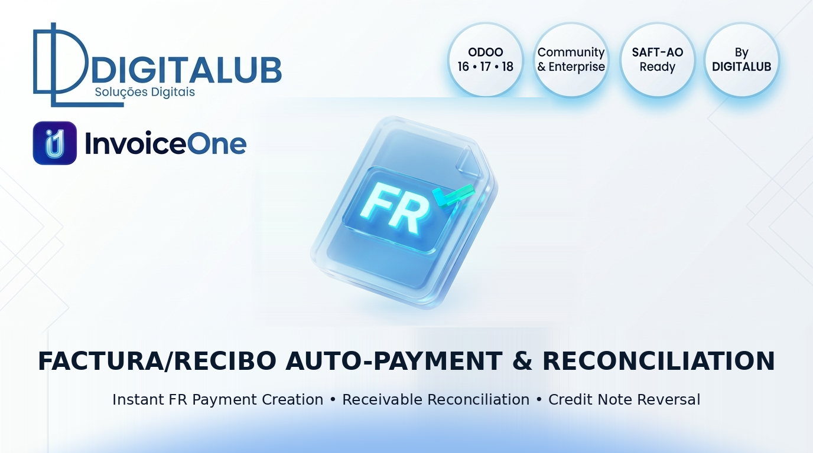
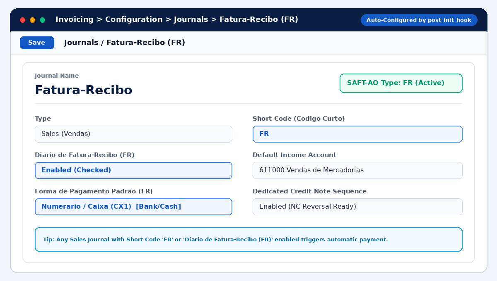
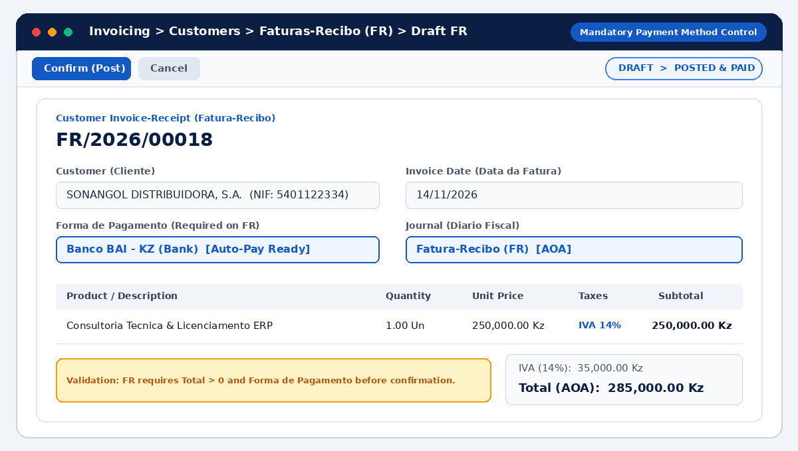
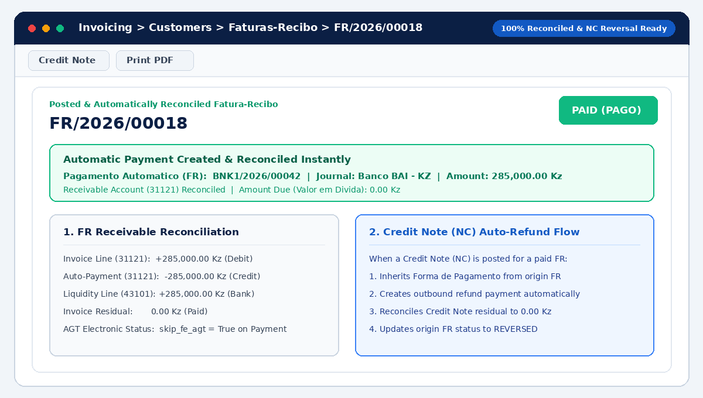

Zero-touch payment creation and instant receivable reconciliation for Angola Factura-Recibo (FR) invoices in Odoo. Enforces mandatory Bank/Cash payment method selection, settles FR invoices upon confirmation, and automates Credit Note (NC) refund reversals.
100% Auto-Reconciled
Immediate inbound payment on FR confirmation and automatic outbound refund on Credit Note reversal.
Automatically provisions the Fatura-Recibo (FR) sales journal with configurable is_fr_journal flag, saft_inv_type = 'FR', and default Bank/Cash payment method upon installation.
Enforces mandatory Forma de Pagamento (Bank or Cash journal) and strictly positive totals on FR invoices. Confirming the invoice automatically creates, posts, and reconciles the payment in a single transaction.
Confirming a Credit Note (out_refund) against a paid FR invoice automatically generates the outbound refund payment, reconciles the credit note, and marks the original FR invoice as Reversed.
Complete Factura-Recibo payment automation and reconciliation in 3 simple steps.
Upon installation, the post-init hook automatically creates or updates the Fatura-Recibo (FR) sales journal for every company, enabling is_fr_journal, setting saft_inv_type = 'FR', and linking a default Bank or Cash payment journal.

Create an Invoice-Receipt from Invoicing → Customers → Faturas-Recibo (FR) (or select the FR journal on any customer invoice). The Forma de Pagamento field appears automatically, pre-filled with the journal default, and prevents confirmation if missing or if the invoice total is zero.

Clicking Confirm creates and posts the inbound account.payment, reconciles the receivable account lines (31121), links the payment on the invoice, and sets the invoice status to Paid. If a Credit Note (NC) is later confirmed against the paid FR, the outbound refund payment is generated and reconciled automatically.

Guaranteed full interoperability with official Odoo accounting architecture
| Supported Versions | Odoo 16.0, 17.0, 18.0, 19.0, 20.0 (Community & Enterprise) |
| Required Core Modules | account (Invoicing / Accounting) |
| Ecosystem Integration | Works standalone on standard Odoo or seamlessly integrated with dl_certification_ao, dl_layouts_ao, l10n_ao_fe & Point of Sale (is_pos_invoice) |
| Installation Type | Standard Odoo Addon • Automatic FR Journal Provisioning (_post_init_hook) • Plug & Play |
Premier specialists in Odoo ERP architecture, high-performance business applications, and regulatory compliance for Angola. Our modules are built following strict clean-code standards, continuous automated testing, and enterprise-grade production stability.